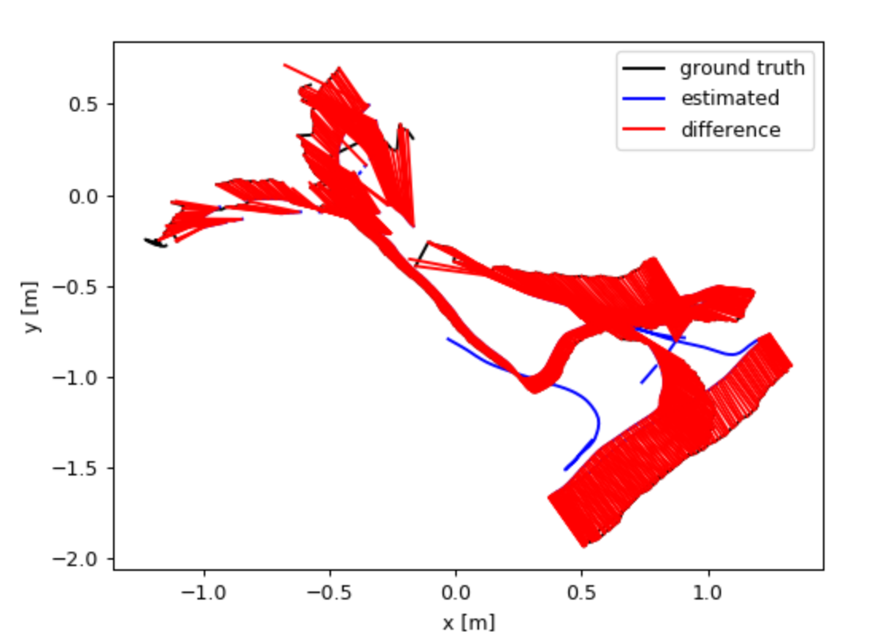

Visual Odometry
Team VOD: Akhilesh Aji, Bhavya Bahl, Ashwin JeyaseelanFall 2019 CS 6476 Computer Vision: Class Project
Georgia Tech
Abstract
In this project, we worked on a visual odometry system that tracks the pose of the camera throughout an RGB-D video sequence. In our approach, we take the initial pose of the camera and update it incrementally using transformations calculated by feature detection and matching across frames. We evaluate our approach on the freiburg1_floor dataset from the computer vision group of the Technical University of Munich Department of Informatics [1]. The data includes a video going over the wooden floor of an office, with rgb-d information and ground truth camera pose information. The average translational error(mean of absolute difference between grouth truth position and predicted position) for our approach is around 0.5 metres for the video sequence listed above.Visual Odometry in Practice:

Figure: The image on top shows the features detected in an outdoor scene. We match such features across consecutive frames to calculate transformations between them. The bottom left image shows the 2D projection of a path generated by a visual odometry system. The bottom right image shows a portion of the detected path along with the camera orientation and the features projected in the 3D space
Introduction
One of the most fundamental algorithms for mobile robotics is Simultaneous Localization And Mapping (SLAM). SLAM is used by a robot to discern where in the world it is, and build a map around itself. In this project we plan on replicating a crucial component of SLAM called Visual Odometry(VO). VO is the process of using a camera to verify the position of a robot. This can be very useful to reduce drift in wheel-based odometry systems which keeps building up incrementally.Our system takes in an RGB-D video feed generated by a kinect and plots the movement of the camera around the world. It tags each frame of the video with the (x,y,z, unit quaternion) of the camera when it took this image based on the predicted position of the previous image and transformation between the two images.
This problem is particularly interesting because it combines many of the tools we have discussed in class in a layered fashion. Edges must be extracted to help define features for SIFT to extract and match followed by finding the homography matrix to understand the relationship between each of the images. Each level of the process will require that the previous step was done with as little noise seeping through as possible. This means that there will always be additional features we can implement to reduce noise or allow the system to run faster. In addition visual odometry as a subject is still under research. As robots are becoming more ubiquitous and cheap they use fewer and cheaper sensors. As a result, simple cameras are doing the job that previously was accomplished with other sensors such as lidar.
Relevant Work
Some of the existing approaches for visual odometry using RGB-D videos are based on minimizing an energy function which measures the pixelwise photometric and depth difference between the target image and the warped source image with respect to a 6 DOF pose.Other approaches are based on first calculating the corresponding points between the source and the target images and then computing a closed-form relative transformation between the images to minimize the distance between the correspondences. We use this approach in our implementation. Many approaches also use an additional offline optimization procedure to refine the camera pose at each time step which is based on minimizing the distance between the predicted camera pose at every time step and the transformed camera pose from the previous time step.
Approach
In visual odometry, we are given a camera which is moving through space and capturing images at discrete time steps. The goal is to predict the pose of the camera at each time step with respect to it's initial pose. Let us denote the set of images taken at times k by \(I_{0: n}=\left\{I_{0}, \ldots, I_{n}\right\}\). In the dataset we plan to use, the images contain a depth component along with the RGB components and the pixels in the frames of depth videos correspond 1:1 to the pixels in the frames of RGB videos.The movement of camera from one position to another can be modelled as a rigid body transformation given by \(T_{k, k-1} \in \mathbb{R}^{4 \times 4}\): \[T_{k, k-1}=\left[\begin{array}{cc}{R_{k, k-1}} & {t_{k, k-1}} \\ {0} & {1}\end{array}\right]\] where \(R_{k,k-1}\) is a \(3 \times 3\) rotation matrix and \(t_{k,k-1} \in \mathbb{R}^{3 \times 1}\) is the translation vector. An important component of visual odometry is to compute the relative transformation \(T_{k,k-1}\) from the images \(I_{k}\) and \(I_{k-1}\). To compute the camera pose at any time instant, we apply the transformations computed at each time step to initial pose. Let the set of camera poses be \(C_{0:n} = \left\{C_0, \ldots, C_n\right\}\), then \(C_n = C_{n-1}T_{n,n-1}\), with \(C_0\) being the initial camera pose, which can be set arbitrarily.
To compute transformations between images, we will first extract salient features from RGB images, which are likely to match across consecutive time instants. This will give us the (x,y) pixel coordinates of the features. We will concatenate the depth information to the (x,y) location of each of the keypoints detected to get 3D point cloud with respect to the camera frame as described here. This webpage explains how to go from 2D points to 3D point clouds. The most relevant features for visual odometry are corners and blobs because their positions in can be measured accurately. There is vast literature on both corner detectors (like Moravec, Forstner, Harris, and FAST) and blob detectors(SIFT, SURF, CENSURE). We used SIFT for feature detector for our implementation. After detecting features, we will match features between images at consecutive time instants using the similarity of feature descriptor(SIFT).
After computing the 3D-to-3D correspondences between the features of the images, we want to find \(T_k\) that minimizes the \(L_2\) distance between the two 3-D feature sets. In other words, we have the point sets \(P\) and \(P'\) such that: \(P'_{i} = RP_{i} + t\). We want to find \(R\) and \(t\) which minimizes \(L\): \[L = \sum_{i=1}^{N}\left\|P_{i}^{\prime}-\left(R P_{i}+t\right)\right\|^{2}\] Following the method described in [2], the rotation and translation can be computed as: \[R_{k,k-1} = VU^{\top}, \quad t_{k,k-1}=\overline{X_{k}}-R_{k,k-1} \overline{X}_{k-1} \] where \(X_k\) and \(X_{k-1}\) are the set of corresponding 3-D points and \(\mathrm{USV}^{\top}=\operatorname{svd}\left(\left(X_{k-1}-\overline{X}_{k-1}\right)\left(X_{k}-\overline{X}_{k}\right)^{\top}\right)\) and \(\overline{\cdot}\) stands for arithmetic mean value. Once we have the transformation matrices, we can get the camera pose at new time instant simply by concatenating the transformations between two time instants to the transformation at previous time instant. To test our implementation, we conducted experiments with manually generated points with very simple translation movements before moving onto the actual dataset.
Experiments and results
We tested our algorithm on the freiburg1_floor dataset from the computer vision group of the Technical University of Munich Department of Informatics [1]. The data includes a video going over the wooden floor of an office, with rgb-data and ground truth camera pose information.We have implemented two different versions of the algorithm. The first is based on the epipolar geometry discussed in class. This method does not take advantage of the depth component of the dataset. While implementng this we were not able to get consistent results. We have decided not to continue pursuing this path as it does not take full advantage of the data we are given, and was the worse performing of the two routes we pursued. The second method which is the one we initially proposed in our approach is based on the work from Arun et al.[2].
The code that we wrote can be found here. The SIFT based feature matching code is based on [4].
The image below compares our recreated odometry with the ground truth x, y coordinates of the camera. In both ground truth and our recreation, the path starts by going to the left then moving in the y dimension before jumping back to the right and finishing the path on that side. The results aren’t perfect, but our algorithm does a good job predicting the overall path. It’s also important to consider the fact that even the ground truth isn’t a continuous plot, due to the video jumping frames in the middle of the sequence.
Below is a plot of the difference between our estimated path and the ground truth 2D camera pose coordinates.

As shown in the plots above and below, the difference increases over time. For roughly the first half of the trajectory, the difference is small until it jumps to the right and the error accumulates.
The error per step helps explain this. Fortunately, during most of the time steps, the error is close to 0. But at certain steps, there are spikes in the error, such as around 750 and 1000. A possible cause for this issue is that the video skipped a bunch of frames at these time steps, resulting in an inaccurate transformation matrix across the subsequent frames at those time steps and consequently incorrect pose predictions. This error offsets every pose for the rest of the path. For example, if only the first 750 estimated poses are used the Absolute translational error RMSE is 0.0857 meters in addition the 250 poses between 750 and 1000 the error is 0.12. As you can see this means that before and after the spike in error the tracking is very good. As a result, in a real world situation in which every frame is being processed the error would remain very low.
Below is a table of our metrics (in meters) to further evaluate our algorithm. The root mean squared error and mean are sensitive to outliers, which our data clearly has, as shown by the standard deviation in error and the difference between the minimum and maximum error values. Therefore, median is also helpful to look at, which is around 0.4 meters.
We also experimented with was the ratio value utilized in the ratio test, when selecting matching feature points between frames. The idea behind the ratio test is to filter out bad matches based on a threshold ratio between the best and second best match distance [5]. Decreasing the ratio value results in a higher threshold, which helps filter out more ambiguous points because in order for a match to be reliable, the closest point in a correct match should be much closer than any other incorrect point [5]. The above list has better results with a ratio value of 0.4. With an increased ratio value of 0.5, the errors increase as can be seen in tables below.
| Metrics for ratio test value of 0.4 | Value |
|---|---|
| Absolute translational error RMSE | 0.613676 m |
| Absolute translational error mean | 0.498433 m |
| Absolute translational error median | 0.415210 m |
| Absolute translational error std | 0.357998 m |
| Absolute translational error minimum | 0.026930 m |
| Absolute translational error max | 2.755501 m |
| Metrics for ratio test value of 0.5 | Value |
|---|---|
| Absolute translational error RMSE | 1.781425 m |
| Absolute translational error mean | 1.461322 m |
| Absolute translational error median | 1.088532 m |
| Absolute translational error std | 1.018830 m |
| Absolute translational error minimum | 0.43635 m |
| Absolute translational error max | 3.686539 m |
Conclusion and future work
In this project, we implemented an incremental approach to visual odometry using transformations between consecutive time frames of a video. The average translational error(mean of absolute difference between grouth truth position and predicted position) for our approach is around 0.5 metres for our dataset. The presence of fast camera movements in the video sequence distort our results a bit after a certain point of time. This can be seen by the fact that our implementation had an error of only 0.1 metres till the first 600 time steps. Currently, the feature detection and matching are the two computationally intensive steps in our implementation. Some other approaches use other feature detectors like GFTT and BRISK feature desciptor which provide a good tradeoff between accuracy and computation time.Some ways in which our implementation can be improved are as follows:
- Creating a motion model for the camera by using optical flow field and doing it at various levels from coarse to fine
- Using Bundle adjustment for refining the predicted poses: We can represent the camera poses as a pose graph where the pose forms the node and the transformations form the edges. We can then optimize for camera pose parameters by minimizing the cost funtion \(\sum_{e_{ij}}\left\|C_{i}-T_{e_{ij}} C_{j}\right\|^{2}\). Non linear optimization algorithms can solve for the required parameters
References
[1]Sturm, Jürgen, Nikolas Engelhard, Felix Endres, Wolfram Burgard, and Daniel Cremers. "A benchmark for the evaluation of RGB-D SLAM systems." In 2012 IEEE/RSJ International Conference on Intelligent Robots and Systems, pp. 573-580. IEEE, 2012.[2] K. S. Arun, T. S. Huang, and S. D. Blostein, “Least-squares fitting of two 3-d point sets,”IEEE Trans. Pattern Anal. Machine Intell.,vol.9,no.5,pp. 698–700, 1987.
[3] Steinbrücker, Frank, Jürgen Sturm, and Daniel Cremers. "Real-time visual odometry from dense RGB-D images." In 2011 IEEE International Conference on Computer Vision Workshops (ICCV Workshops), pp. 719-722. IEEE, 2011.
[4] https://docs.opencv.org/3.4/da/df5/tutorial_py_sift_intro.html
[5] Lowe, G. David, "Distinctive Image Features from Scale-Invariant Keypoints." In 2004 International Journal of Computer Vision.
[6] Li, Shile, and Dongheui Lee. "Fast visual odometry using intensity-assisted iterative closest point." IEEE Robotics and Automation Letters 1.2 (2016): 992-999.